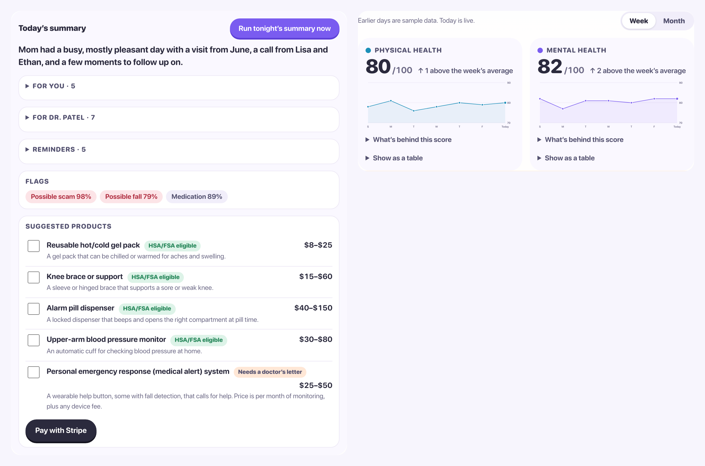

Apotheosis
A wristband that notices, so Lisa doesn’t have to guess.
Margaret, 78, lives alone. Lisa is 400 miles away.
Americans 65+ live alone (~28%).
ACL, Profile of Older AmericansUS family caregivers, ~1 in 4 adults.
AARP and National Alliance for Caregiving, Caregiving in the US 2025Three things go wrong quietly.
Americans 65+ have MCI or dementia.
HRS-HCAP, Manly et al., JAMA Neurology 2022~6 in 10 people with dementia wander at least once.
Alzheimer’s Association
reported lost to elder fraud by 60+ in 2024.
FBI IC3, Elder Fraud Report 2024Up from $3.4B in 2023.
FBI IC3
adults 65+ fall each year.
CDC STEADI~50% of chronic meds are NOT taken as prescribed.
WHO 2003
~$9B a year, US alone.
- TAM~25M US households with memory changes or living alone, at $30 a month
- SAM~10M with a phone and an engaged caregiver
- SOM1% of TAM by year 3
6.7M to 14.4M Americans 85+, 2020 to 2040
ACL, Profile of Older AmericansOne band. One voice. One app.
Band 39
Feels her movement. Hears her day.
Pip
Talks with Margaret, out loud.
Lisa’s app
Tells Lisa only what matters.
Three areas, one band.
Mental
- Memory decline
- Speech changes
- Social isolation
- Abuse
- Wandering
- Sleep
Financial
- Scam calls
- Fraudulent charges
- Missed bills
- Mom’s safe cardsimulated
Physical
- Falls
- Tremor
- Medicine taken
- Seizure-like movement
- SOS
Three pillars, from Grandma to Lisa.
From her wrist to Lisa’s phone.
- Band mic
- Deepgramspeech to text
- Geminidecision model
- Care engine
- Lisa
- 50 Hzaccel + gyro
- Motion labfall, tremor, steps
- Care engine
- Lisa
- Pipanswers when called
- Deepgramvoice
- Margaret
A scam call, end to end.
Margaret hears
Grandma, I’m in jail. Buy gift cards.
Band 39 listens
The Gemini decision model reads it as a possible scam.
Pip stays quiet.
Heard nearbyLisa gets
Possible scam callMom’s card freezes
Margaret sees
Your card is taking a short rest. You did nothing wrong. Lisa will call you.
Live demo
Band 39 on a real wrist: live transcript, scam alert, Pip.
localhost:8040A whole day, condensed
One day of Margaret’s life, turned into tonight’s summary for Lisa.
- 383phrases heard
- 3flags
- 6reminders
- 5suggestions

What’s real, what’s simulated.
Runs today
- Live transcript on band 39, by voice
- Scam alert froze the card, live
- Hey Pip answers out loud
- Deepgram, Gemini, Stripe wired in
- Motion labels, 11 checks passing
Simulated, or not yet
- Mom’s safe card: no real money moves
- Past days are sample history
- Motion labels not yet on a real wrist
- Distress from audio: measured, not wired in
Margaret stays home. Lisa stays close.
- Hear distress, not just words
- Real card limits through Stripe Issuing
- Tune it on real wearers
Signals, not diagnoses.